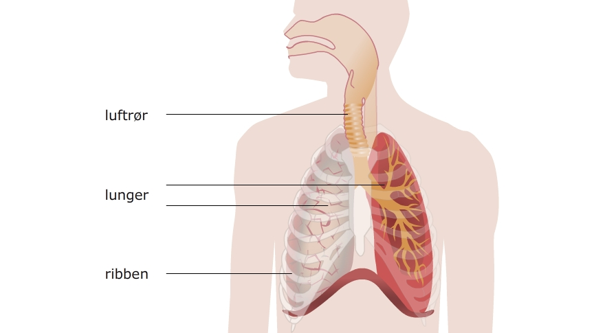

Hvordan kan det være, at vi hele tiden skal trække vejret? Og hvad bliver der af den luft vi indånder? Føres den ned i lungerne og direkte op igen, eller hvor skal luften hen? Disse spørgsmål vil blive besvaret i dette kapitel om kredsløbet, hvor billeder og animationer vil støtte dig hele vejen, mens du læser. Til hvert afsnit er der opgaver.
Formålet med kredsløbet er at få ilt (oxygen) ud til kroppens celler. Cellerne bruger ilten til at forbrænde fedt og sukker for at give kroppen energi. Sukker og fedt er vores brændstof, og ved at spise får vi næring til kroppen. Men for at kroppen kan omdanne stofferne til energi, skal vi også bruge ilt. Uden ilt vil kroppen ikke kunne fungere.
Når cellerne bruger O2 (ilt) til at lave energi til kroppen, bliver der samtidigt dannet CO2(kuldioxid). Kroppen skal ikke bruge CO2, og en del af kredsløbet opgave er at få CO2 væk fra cellerne og ud af kroppen.
I kredsløbet indgår lungerne og vejtrækningen samt blodbanen og hjertet. For at kredsløbet kan fungere, er der to vigtige funktioner, der som minimum skal fungere – din vejtrækning og hjertets pumpning.
Prøv at tænk på hvorfor der gives kunstigt åndedræt og hjertemassage til en person, der ikke selv trækker vejret eller hvis hjerte er gået i stå?
Når en person har været udsat for en ulykke og har brug for livsreddende hjælp, undersøger redderne altid om personen trækker vejret og om der er puls (om hjertet banker). Hvis alt ikke er som det skal være, hjælper redderne personen ved at give kunstigt åndedræt og hjertemassage. Derved holder de kredsløbet i gang og kroppen får ilt til cellerne (inklusiv hjernen). Uden denne hjælp vil organer holde op med at virke.